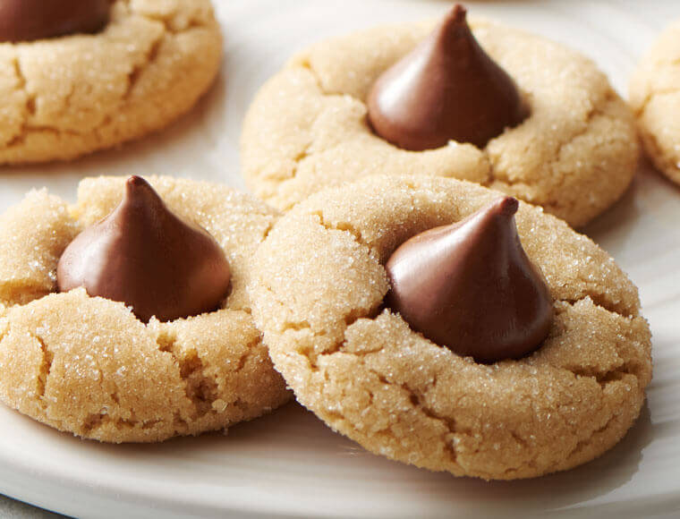

Peanut Butter Blossom Cookies
These scrumptious holiday cookies are irresistible! Betty Crocker is the queen of baked goods, so these peanut butter blossoms are the perfect combination of silky chocolate and tender, sweet-salty peanut butter cookie. These treats are easy and quick to make and a necessity for the holidays!

Ingredients
Make sure you have all these ingredients before you begin!
- 1/2 cup granulated sugar
- 1/2 cup packed brown sugar
- 1/2 creamy peanut butter
- 1/2 cup butter, softened
- 1 egg
- 1 1/2 cups all-purpose flour
- 3/4 teaspoon baking powder
- About 36 Hershey's Kisses Brand milk chocolates, unwrapped.
Directions
Follow these steps!
- Step 1: Heat oven to 375 ℉
- Step 2: In large bowl, beat 1/2 cup granulated sugar, brown sugar, peanut butter, butter and egg with eletric mixer on medium speed, or mix with spoon, until well blended.
- Step 3: Stir in flour, baking soda and baking powder until dough forms.
- Step 4: Shape dough into 1-inch balls; roll in additional granulated sugar. On ungreased cookie sheets, place about 2 inches apart.
- Step 5: Bake 8-10 minutes or until edges are light golden brown. Immediately press 1 milk chocolate candy into the center of each cookie. Remove from cookie sheets to cooling rack.
- Enjoy!
Link Recipe.
Contact Me
If you loved these treats, contact me for some more easy recipes!
<My E-mail!
32 Campus Drive
Missoula, MT 59812
(406)243-0211